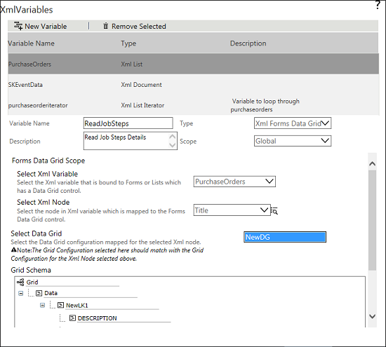

No
To create XML Variable of type XML Forms Data Grid:
Variable Name - Enter the name of the variable.
Description - Enter a description for the variable.
Type - This field defaults to XML Document. Select XML Forms Data Grid from the drop-down.
Scope - Select the scope of the variable. The scope of the variable can be either Global or Local.
